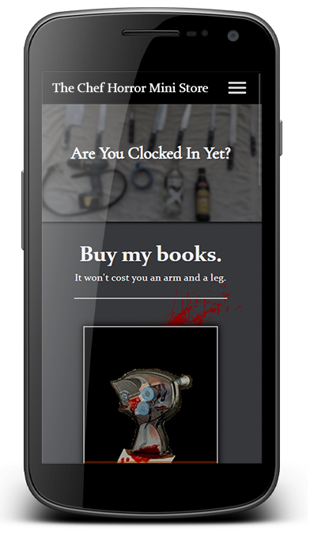
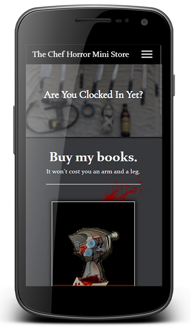

Quick Bio
I'm passionate about creating great user experiences through tasteful and intuitive UIs that looking stunning on both desktop and mobile screens. Even though my focus is on front-end development, I still took the time to immerse myself in backend technologies so I could build full stack applications for my clients who need them.
Here's a few of my works


Live site: kaylakossajda.com
A full stack application for an artist to keep her works from different media in one place. She is a painter, drawer, photographer, and graphic designer, and social media just wasn't fitting the bill. Now she can direct any potential client to her website so they can easily see everything she has done. She can log in and make changes to the content by adding, deleting, or editing images.
Technologies used: Node/Express backend, Google Cloud Storage, EJS templating, CSS, Bootstrap, and JavaScript.
 

Live site: chef-horror-mini-stories.com
A site for a chef-author who writes imaginative novellas with a horror motif. I adapted the concept from a cobbled together SquareSpace site to a unified and seemless thematic site that not only showcases his books, but also gives the user a peak into the mind of the author.
Technologies used: Only HTML and CSS. No JavaScript needed!


Live site: leather-journal.herokuapp.com
Another full stack application with a calming and tactile feel. The UI emulates a leather-bound day planner where the user can select any date and start writing activities for the day. Once completed, the list items can be crossed-off with the click of the mouse, and the database keeps track of every user's lists and the completed items.
Technologies used: Node/Express backend, MongoDB, React.js frontend framework, JavaScript ES6, JSX, Material-UI, Materialize, and CSS
My History
I'm a classically trained musician who earned a degree in classical guitar performance, and a former chef of fine dining restaurants. Both of these skills contribute to my ability of understanding user experience in a fundamental way.
My previous experience studying music gave me an eye for detail that allows me to spot errors in code, as well as create pixel-perfect layouts. This comes from years of analyzing musical scores for the slightest marks of ink on the page that can convey a completely different meaning. I also learned the value of presenting polished works to my audience through hours of honing and perfecting.
In the chef world, I had to learn how to communicate quickly and effectively with my team to get the desired results. Everything is "on-the-fly" and every deadline is immediate! Working in fine-dining gave me the ability to take something as chaotic as a bustling kitchen, and display it in a neat, and beautiful package to deliver to the guests, and do it hundreds of times a night.
Web Development and Me
The pandemic unfortunately left me jobless almost immediately. But this was the perfect opportunity I needed to transition into a career with longevity and stability, even in an uncertain ecomony.
I took it upon myself to learn web development, and I knew I wanted to focus on front-end. I taught myself with the help of many online courses, bootcamps, and tutorials until I became adept in best practices using modern CSS, JavaScript, and one of the most in-demand front-end frameworks: React.js.
My learning continues every day. I'm always looking for new tricks and tips, and building constantly, even if they are only personal projects for my own development. Aside from that, I have had a handful of real-world clients that I was able to help build websites for, and it has been extremely rewarding.
Ultimately, I would like to join a team of developers so I can advance to the next stage of my new career.